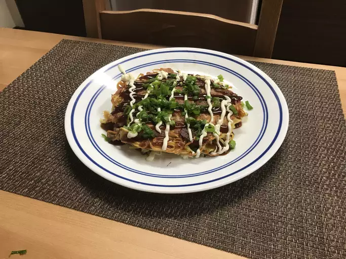

Bacon Okonomiyaki

Recipe Description
I have always enjoyed Okonomiyaki and was pleasantly surprised
when I found this recipes when deciding on another webpage. It
brings me joy to be able to make a webpage about this dish!
Ingredients
- 4 eggs
- 1/2 cup water
- 1/2 cup all-purpose flour
- 2 teaspoons soy sauce
- 1 teaspoon baking powder
- 1 teaspoon salt
- 3 tablespoons vegetable oil
- 1 onion, diced
- 2 cups shredded cabbage
- 1 (8 ounce) package dried soba noodles
- 1 (8 ounce) package bacon, chopped
Directions
- Whisk eggs, water, flour, soy sauce, baking powder, and
salt together in a bowl; set batter aside.
- Heat oil in a saute pan over medium heat. Add onion; cook
until soft and translucent, about 5 minutes. Stir onion into
batter. Add cabbage to the same pan; cook until slightly
wilted, 5 to 7 minutes. Stir cabbage into batter.
- Fill a large pot with water and bring to a boil. Cook soba
noodles in boiling water, stirring occasionally, until tender
yet firm to the bite, 5 to 7 minutes. Drain and cut noodles
into shorter pieces; stir into batter.
- Cook 1/4 cup bacon in a skillet over medium-high heat
until starting to crip, 2 to 3 minutes; arrange in a small
circle in middle of the skillet. Add 1 cup batter to the
skillet on top bacon; cook until brown and crispy, flipping
pancake halfway and pressing down with a spatula, about 5
minutes per side. Repeat with remaining bacon and batter.